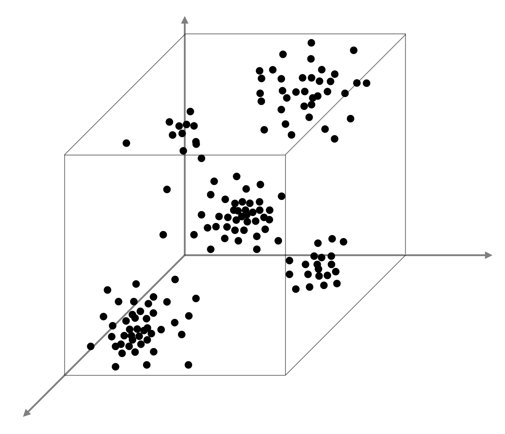
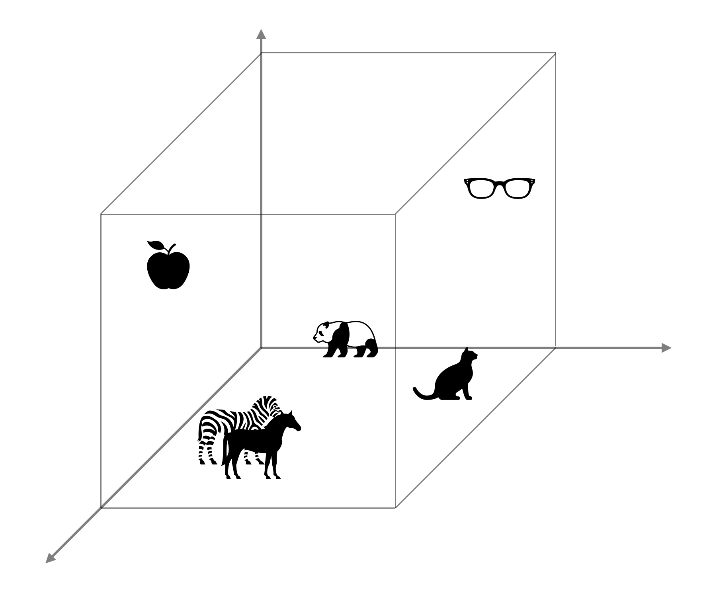

什么是数据集的分布
最近看 GAN 相关的论文，总出现「分布」这个词，什么「数据集的分布 \(p_\text{data}(x)\)」[1] 啦、「目标域 \(Y\) 的分布」[2] 啦～所以对于 CV 而言，究竟什么叫做「分布」呢？
在概率论中我们都学过概率分布，最能体现概率分布的就是分布列 \(p_X(x)\)（对于离散随机变量）或概率密度函数 \(f_X(x)\)（对于连续随机变量）或累积分布函数 \(F_X(x)\)（离散、连续都适用）了。我们当年先学习一元随机变量，然后过渡到二元随机变量，于是出现了联合分布 \(p_{X,Y}(x,y)\)、边缘分布 \(p_X(x)\) 等。如果我们进一步扩展，设 \(X\) 是一个随机向量，那么 \(p_X(x)\) 可以是这个随机向量的概率分布，也可以理解为 \(X\) 各个分量的联合分布。
这么看来，当我们说到「分布」的时候，似乎指的是一个 \(\mathbb R^n\mapsto \mathbb R\) 的函数，从输入的随机向量映射到一个正实数值，这当然没错，不过这个函数不是很直观。为此，我们可以在脑海中想象一个 \(\mathbb R^n\) 空间，在这个空间里撒点，概率大的地方点密集一些，概率小的地方点稀疏一些～嗯不错，现在脑海里就有了一个非常直观的画面了。

Okay，现在我们在 CV 领域，更准确来讲是 GAN 的领域细想一下这个问题。GAN 解决一个什么问题？在 GAN 的论文[1] 中已经说的很明白了：让生成网络 \(G\) 的输出分布和数据集的分布相同。为了训练 \(G\)，我们引入一个判别网络 \(D\) 来判断 \(G\) 的输出分布究竟和数据集的分布是否相同，通过损失将梯度一路传回 \(G\) 达到训练的效果。那么什么叫做数据集的分布呢？
想象一个“图像空间”，它可以是 \(32\times32\) 维、每一维在 \(256^3\) 中取值的离散空间（也即是把 \(32\times 32\) 的图像压扁成向量视作输入）；也可以是 \(100\) 维随机向量在经过复杂的非线性变换后得到的空间（也即是 GAN 中 \(G\) 网络的输出空间）……总之，在这样的空间里，大部分图像都是没有意义的噪声图像，就像老电视机屏幕的雪花一样，没有哪个图像数据集会收录这样的噪声；反过来想，一个数据集收录的所有图像，就在这个空间中占据了一些小地方，想象在这些地方撒了一些密集的点，这就是所谓数据集的分布了。
那什么是某种「域」的分布呢？「域」这东西蛮悬的，基本靠上下文猜作者是啥意思。如果我想把猫变成狗，我可以说我的 GAN 从猫这个域映射到了狗这个域；我让一个垮着脸的人笑了起来，我说微笑的脸是一个域。反正域类似一个子空间，这里面的图像有某种共同特征，比如猫域里都是猫。域的分布就是说，猫域在整个图像空间里占据了一小小块特定的位置：

就酱！
参考资料
- Goodfellow, I., Pouget-Abadie, J., Mirza, M., Xu, B., Warde-Farley, D., Ozair, S., ... & Bengio, Y. (2014). Generative adversarial nets. Advances in neural information processing systems, 27. ↩︎
- Zhu, J. Y., Park, T., Isola, P., & Efros, A. A. (2017). Unpaired image-to-image translation using cycle-consistent adversarial networks. In Proceedings of the IEEE international conference on computer vision (pp. 2223-2232). ↩︎